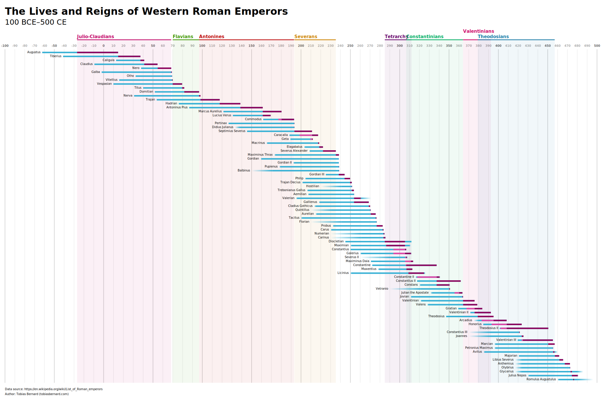

App Icon System—A new platform app icon style optimized for easy adoption by third party apps. We also made new tooling to support the new workflow.
Design Guidelines Icon Design TutorialWriting & Speaking
I occasionally write articles and speak at conferences, usually about design, ethical technology, or some combination of the two. These are some of my favorites from the last few years:
Semantic Animation—A new, holistic approach to designing animated interfaces. I co-wrote an article on A List Apart about it.
I’ve also given talks about semantic animation at conferences and meetups, including FOSDEM 2018:
There Is No “Linux” Platform—On the state of the “Linux” app ecosystem and why vertical integration is the only way forward.
Read ArticleDesign-Driven Free Software—My SFSCon 2017 talk on why Free (as in freedom) software needs to embrace design, why that’s hard to pull off, and how we can get there.
Other Projects
Though my focus is interaction design I also do branding, web development, and illustration (among others) from time to time. Some examples:
Nostalgia—A little native app that makes it easy to use Jakub’s awesome default wallpapers from past GNOME releases.
Get the app
Brand for systemd—Like it or not, everything kind of needs a logo these days, even low-level Linux infrastrucure projects.
Brand GuidelinesDynasty—A tool for generating visualizations of succession timelines, e.g. all the roman emperors (PDF).
Project website 